November 2024 Top 40 New CRAN Packages
One hundred tinny-four new packages made CRAN’s final cut in November. Here are my Top 40 picks in nineteen categories: Botany, Climate Analysis, Computational Methods, Data, Ecology, Education, Environment, Epidemiology, Genomics, Health Technology Assessment, Machine Learning, Mathematics, Medicine, Networks, Pharma, Statistics, Time Series, Utilities, and Visualization.
Botany
MultiTraits v0.1.0: Implements analytical methods for multidimensional plant traits, including Competitors-Stress tolerators-Ruderals strategy analysis using leaf traits, Leaf-Height-Seed strategy analysis, Niche Periodicity Table analysis, and Trait Network analysis. See Grime (1974), Pierce et al. (2017) and other references provided for methods and the vignette for a tutorial.
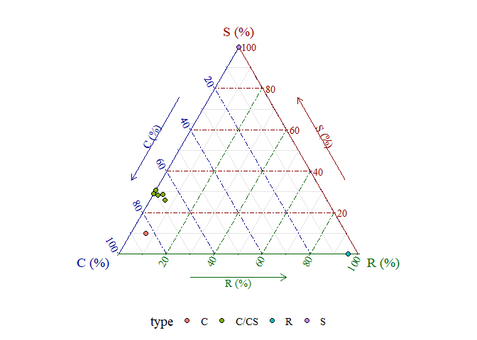
Climate Analysis
chooseGCM v1.0.1: Implements methods to help selecting General Circulation Models (GCMs) for projecting models to future scenarios. Functions include clustering algorithms, distance and correlation metrics, and a tailor-made algorithm to detect the optimum subset of GCMs that recreate the environment of all GCMs. Look here for examples.
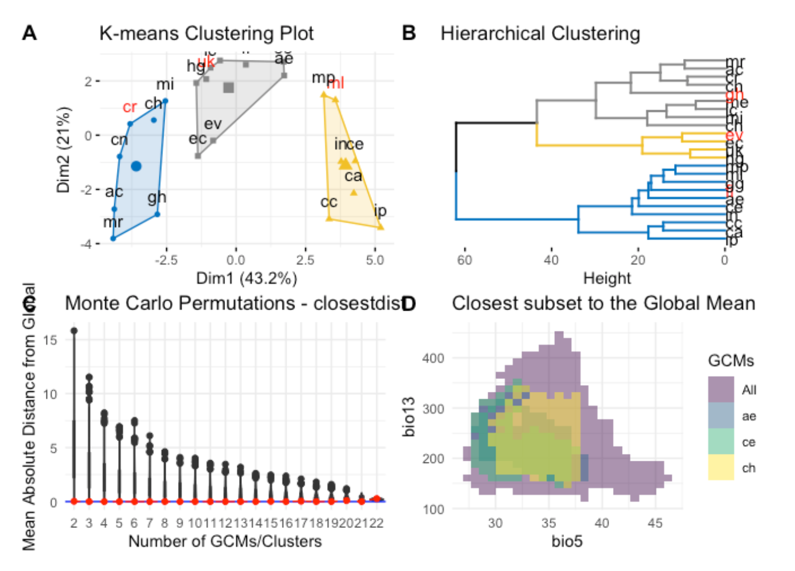
Computational Methods
spconf v1.0.1: Provides functions to compute the effective range of a smoothing matrix, which is a measure of the distance to which smoothing occurs. See Rainey and Keller (2024) and Keller and Szpiro (2020) for algorithmic details and README for examples.
Data
PurpleAirAPI v0.1.0: Provides tools for retrieving and analyzing air quality data from PurpleAir sensors through an API. Functions enable downloading historical measurements, accessing sensor metadata, and managing API request limitations through chunked data retrieval.
sivirep v1.0.1: Provides tools for data wrangling, pre-processing, and generating automated reports from Colombia’s epidemiological surveillance system, SIVIGILA, including a customizable R Markdown template for analysis and automatic generation of epidemiological reports. See the vignette.
STATcubeR v1.0.0: Implements an R client to import data from the STATcube REST API or via the open government data portal Statistik Austria. Look here and here for more information. See the vignette to get started.
wbids v0.1.0: Provides access to the World Bank’s International Debt Statistics (IDS) which contains creditor-debtor relationships between countries, regions, and institutions.
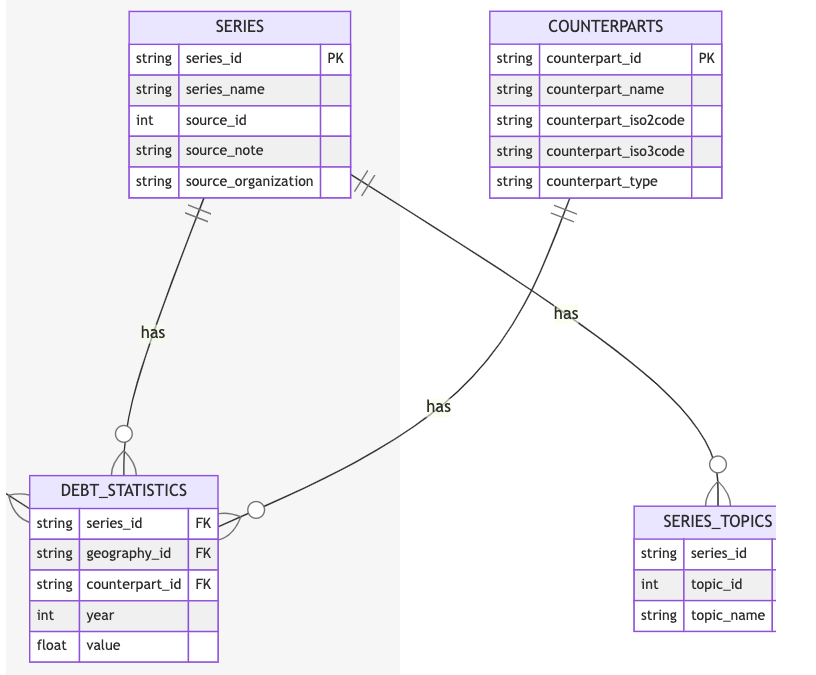
Ecology
ecostate v0.2.0: Fits a state-space mass-balance model for marine ecosystems, which implements dynamics derived from Ecopath with Ecosim while fitting to time series of fishery catch, biomass indices, age-composition samples, and weight-at-age data.
tidywater v0,6.2: Provides multiple water chemistry-based models and published empirical models in one standard format. Functions can be chained together to model a complete treatment process. See Benjamin (2002), Crittenden et al. (2012) and US EPA Manual, (2001) for background. There is an Introduction and two additional vignettes.
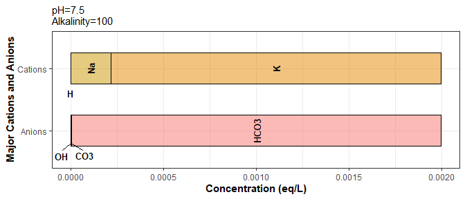
Education
evolved 1.0.0: Provides multiple tools to help educators (especially at the graduate level or in advanced undergraduate level courses) in general evolution classes. Tools include functions to simulate evolutionary processes (e.g., genetic drift, natural selection) and concepts (e.g. Hardy-Weinberg equilibrium, phylogenetic distribution of traits). There are eleven vignettes including birthdeath_deeptime and popgen_intro.
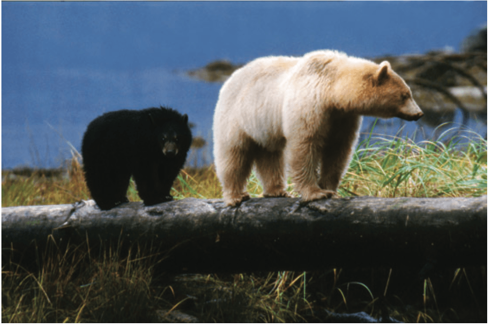
exams2forms v0.1-0: Implements automatic generation of quizzes or individual questions as (interactive) forms within rmarkdown or quarto documents based on R/exams exercises. See the vignette.
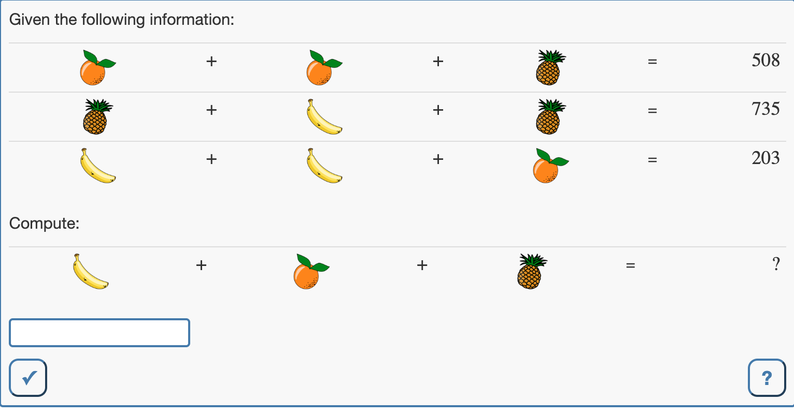
Environment
OpeNoise v0.2-18: Provides functions to analyse, interpret and understand noise pollution data typically regular time series measured with sound meter. See Grasso, Masera and Scordino (2023) for background and look here for examples.

Epidemiology
sivirep v1.0.1: Provides tools for data wrangling, pre-processing, and generating automated reports from Colombia’s epidemiological surveillance system, SIVIGILA including a customizable R Markdown template for analysis and automatic generation of epidemiological reports. See the vignette.
vaccineff v1.0.0: Provides tools for estimating vaccine effectiveness and related metrics and includes functions for managing key features and organizing cohort data, as well as estimating vaccine effectiveness. There are three vignettes including Introduction to cohort design and vaccineff.
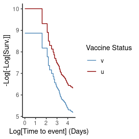
Genomics
divent v0.4-4: Implements a method to measure and partition diversity, including phylogenetic and functional diversity, with functions to estimate alpha, beta and gamma diversity of communities, See Marcon and Herault (2015) for background and the vignette for an introduction.
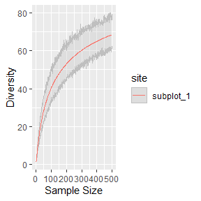 GRIN2 v1.0: Implements the GRIN algorithm as described in Pounds et al. (2013) for analyzing genomic lesion data and expands its analysis capabilities to answer additional scientific questions including a rigorous evaluation of the association of genomic lesions with RNA expression. See the vignette.
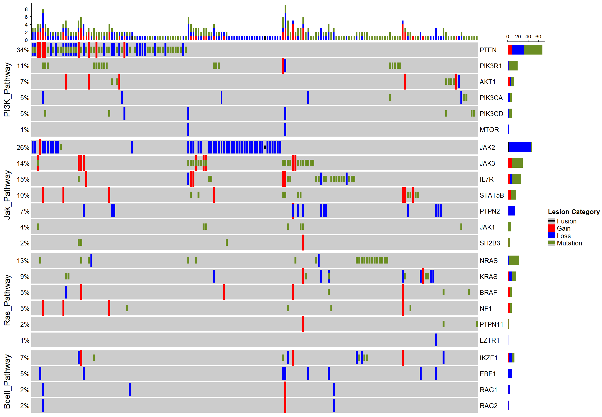
scregclust v0.2.0: Implements the scregclust algorithm described in Larsson, Held, et al. (2024) which reconstructs regulatory programs of target genes in scRNA-seq data. See the vignette.
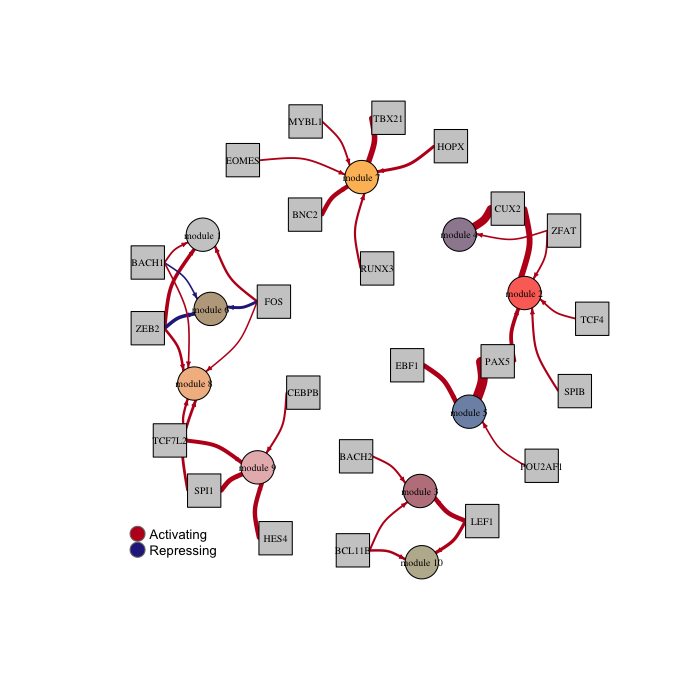
Health Technology Assessment
AIscreenR v0.1.1: Provides functions to conduct title and abstract screening in systematic reviews using large language models, such as the Generative Pre-trained Transformer (GPT) models from OpenAI and also tools for quality assessment of title and abstract screenings, as described in Vembye et al. (2024). See the vignette
maicplus v0.1.1: Implements the method described in Signorovitch et al (2012) to facilitate matching adjusted indirect comparison (MAIC) analysis where the endpoint of interest is either time-to-event (e.g. overall survival) or binary (e.g. objective tumor response). There are seven vignettes including an Introduction and Anchored Survival Analysis.
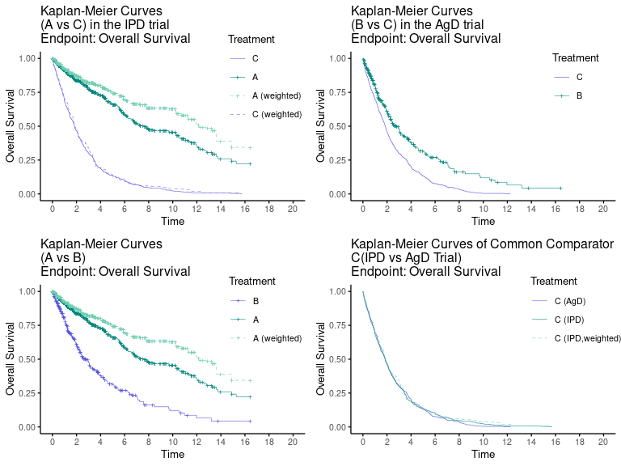
Machine Learning
metasnf v1.1.2: Provides a framework for transforming multi-modal data into a wide range of similarity networks using the similarity network fusion (SNF) algorithm introduced by Wang et al. (2014) and the meta clustering approach of Caruana et al. (2006). Core functionality includes easy customization of distance metrics, clustering algorithms, and SNF hyperparameters. There are twenty-two vignettes including The Settings Matrix and A Complete Example.
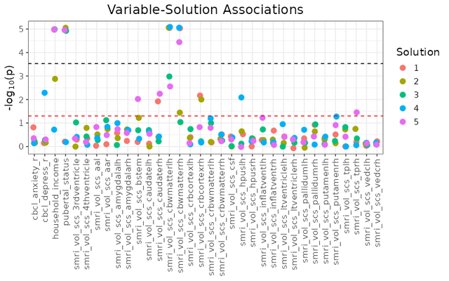
ReSurv V1.0.0: Implements Machine Learning models for predicting claim accounts using neural nets, extreme gradient boosting, and Cox model with splines to optimize the partial log-likelihood of proportional hazard models. There are five vignettes including an Introduction and Claim Counts Prediction Using Individual Data.
SVEMnet 1.2.1: Implements Self-Validated Ensemble Models (SVEM) Lemkus et al. (2021) using Elastic Net regression via glmnet, and also implements the the randomized permutation whole model test for SVEM Karl (2024). See the vignette.
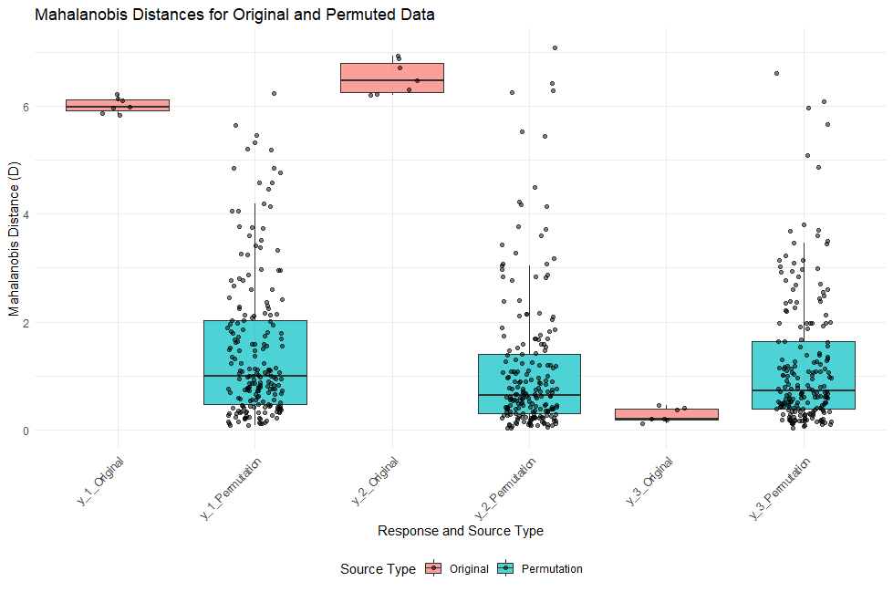
Mathematics
cellularautomata v0.1.0: Provides functions to create cellular automata from Wolfram with plots and animations rules. The output of a cellular automaton is given as a matrix, making it easy to try to explore the possibility of predicting its time evolution using various statistical tools available in R. See Wolfram S. (2002, ISBN:1579550088) A New Kind of Science for background and the vignette for examples.
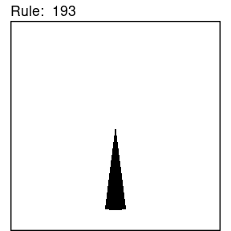
redcas v0.1.1: Implements an interface to the Lisp based computer algebra system REDUCE for interactively executing arbitrary REDUCE code interactively from R, returning output as character vectors. R code and REDUCE code can be interspersed. See README to get started.
Medicine
ClinTrialPredict v0.0.4: Implements a method to predict the course of clinical trial with a time-to-event endpoint for both two-arm and single-arm designs. Simulation datasets can be generated based on the design settings. See the vignette.
Virusparies v1.0.0: Implements a visualization tool for the VirusHunterGather computational pipeline for data-driven virus discovery from sequencing data from the NIH’s Sequence Read Archive or the user’s own data. README points to eleven vignettes including VhgBoxplot and VhgScatterPlot.
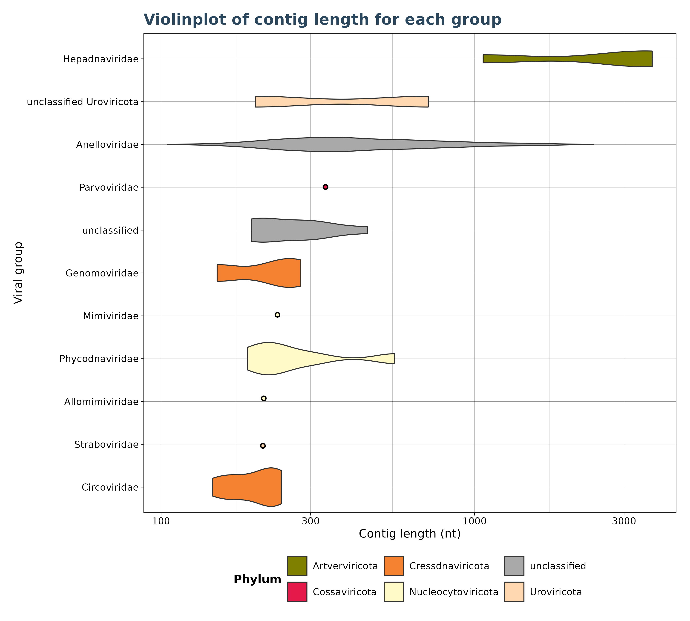
Networks
ig.degree.betweenness v0.1.0: Implements the “Smith-Pittman” community detection algorithm for network analysis using igraph objects. This algorithm combines node degree and betweenness centrality measures to identify communities within networks, with a gradient evident in social partitioning. See Smith, Pittman and Xu (2024) for background and look here for examples.
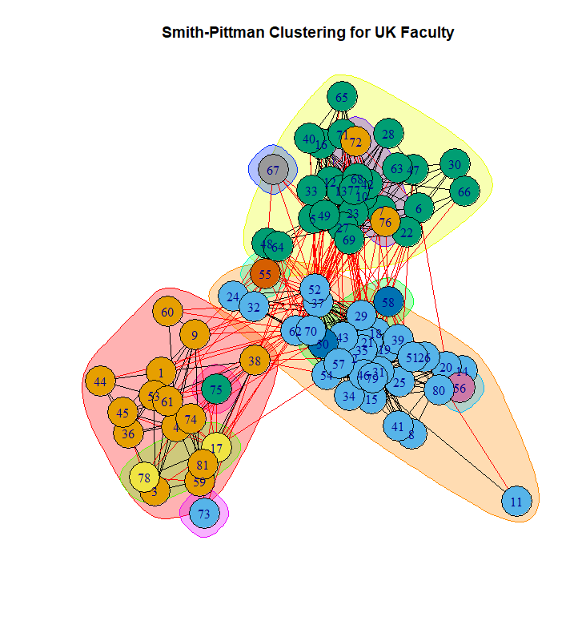
Pharma
autoslider.core v0.1.0: Provides functions to automatically create sides from flextable objects and create standard table templates often used in Study Results Endorsement Plan. It aims to save time, reduce errors and avoid the duplicated effort between statisticians and programmers. Look here to see the code.
Statistics
BayesGP v0.1.3: Implements Bayesian hierarchical models with flexible Gaussian process priors, focusing on extended latent Gaussian models and incorporating various Gaussian process priors for Bayesian smoothing. See Zhang et al. (2023). Zhang et al. (2024), and Stringer, Brown, and Stafford (2021) for the methods used. There are three vignettes including Partial Likelihood and Fitting sGP.
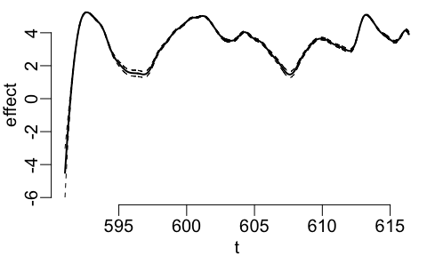
distfreereg v1.0.1: Implements distribution-free goodness-of-fit regression testing for the mean structure of parametric models introduced in Khmaladze (2021). There is an Introduction and four additional vignettes including Comparing Distributions.
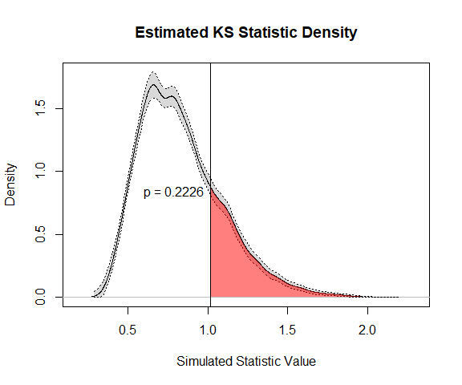
GeoTox v0.2.0: Implements a method to connect spatiotemporal exposure to individual and population-level risk via source-to-outcome continuum modeling. See Messier, Reif, and Marvel (2024) and Eccles et al. (2023) for the theory. There is an Introduction and a vignette on Package Data.

OPSR v0.1.2: Implements ordinal probit switching regression models (a Heckman type selection model with an ordinal selection and continuous outcomes). See Wang & Mokhtarian (2024) and Chiburis & Lokshin (2007) for details and README for an example.
Time Series
tsmarch v1.0.0: Implements feasible multivariate generalized autoregressive conditional heteroscedasticity (GARCH) models including dynamic conditional correlation (DCC), copula GARCH and generalized orthogonal GARCH with generalized hyperbolic distribution. See Boudt et al.(2019) for background and the vignettes Feasible Multivariate Garch Models and demo.
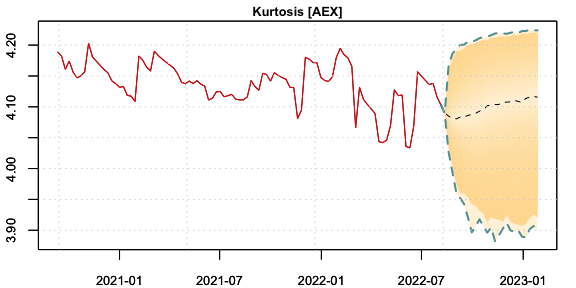
Utilities
deident v1.0.0: Implements a framework for the replicable removal of personally identifiable data (PID) in data sets and provides methods to suit different data types based on the suggestions of Garfinkel (2015) and the ICO “Guidelines on Anonymization” (2012). There are nine vignettes including Rational for De-identification and Worked Example.
lofifonts v0.1.3: Provides tools for alternate font rendering with bitmap and vector fonts that allow for custom layout and rendering using pixel coordinates and line drawing. There are five vignettes including Using bitmap fonts and Unicode Support.
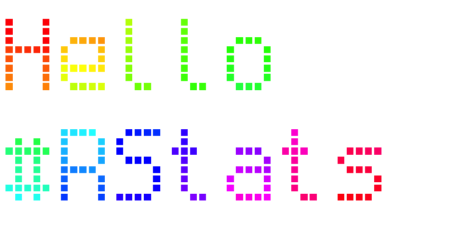 surveydown v0.5.1: Provides functions to generate surveys using markdown and R code chunks. Features include controls for conditional skip logic (skip to a page based on an answer to a question), conditional display logic (display a question based on an answer to a question), a customizable progress bar, and a wide variety of question types, including multiple choice (single choice and multiple choices), select, text, numeric, multiple choice buttons. Designers can also leverage the reactive capabilities of shiny to create dynamic and interactive surveys. See the vignette.
Visualization
effectplots v0.2.0: Implementation various effect plots useful for regression and probabilistic classification tasks including partial dependence plots Friedman (2021), accumulated local effect plots and M-plots from Apley and Zhu (2016), and plots that describe the statistical associations between model response and features. Look here for examples.
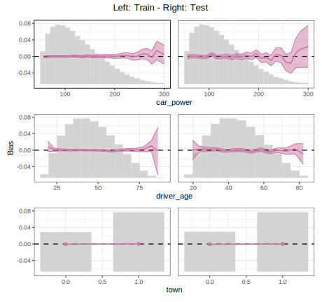 plotFTIR v1.0.0: Implements journal-quality Fourier Transform Infra-Red (FTIR) spectral plots using ggplot2. See the vignette.
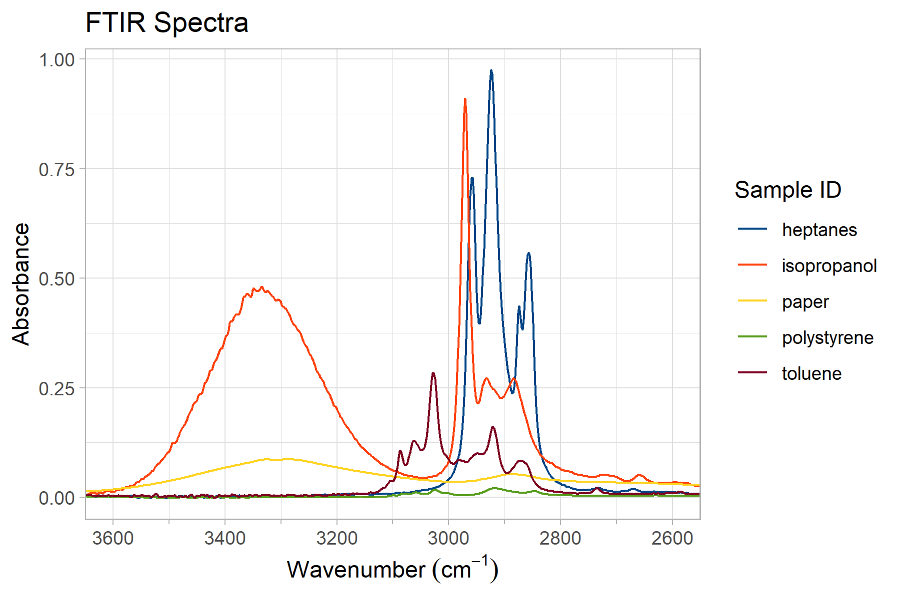
plotthis v0.4.0: Extends ggplot2 to provide a high-level API with wide range of options to create publication-quality plots effortlessly. It is particularly useful for creating complex plots with multiple layers, facets, and annotations. Look here for examples.
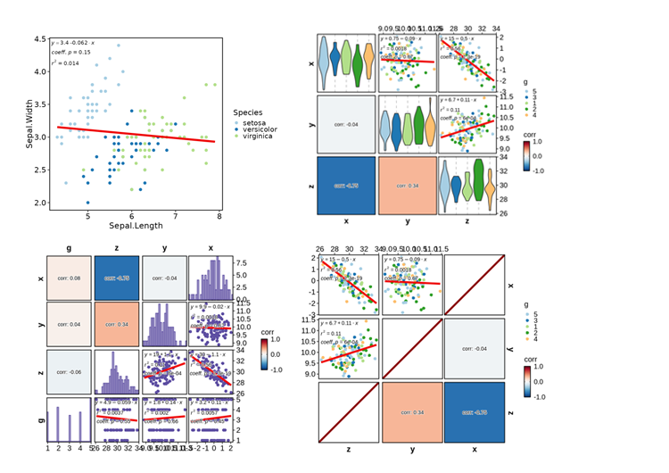
RegrCoeffsExplorer v1.1.0: Implements a visualization tool that offers a nuanced understanding of regression dynamics, going beyond traditional per-unit interpretation of continuous and categorical variables th highlight the impact of unit changes as well as larger shifts such as interquartile changes. See the vignettes BetaVisualizer and OddsRatioVisualizer.
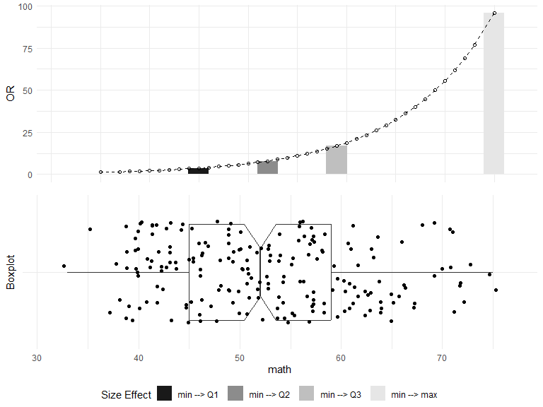 scatterbar v0.1.0: Implements a new tool for visualizing proportional data across spatially resolved contexts by combining concepts of scatter plots and stacked bar charts. scatterbar plots allow users to create scattered bar chart plots, which effectively display the proportions of different categories at each (x, y) location. See Velazquez et al. (2024) for details. There are five vignettes including Getting Started and Customizing scatterbar.
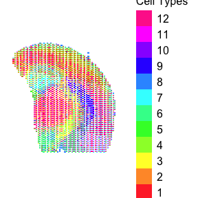 talkr v0.1.3: Provides visualization, analysis and quality control tools for gaining insights into the nature of conversational data. See Dingemanse et al., (2022) for details and the vignette for examples.
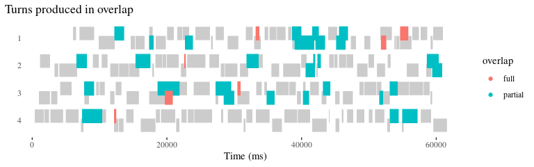